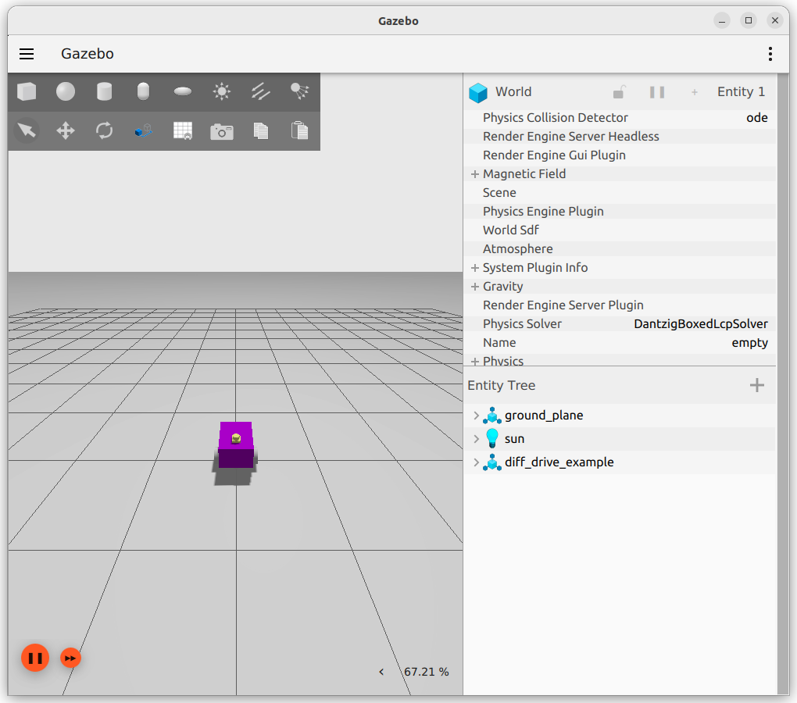
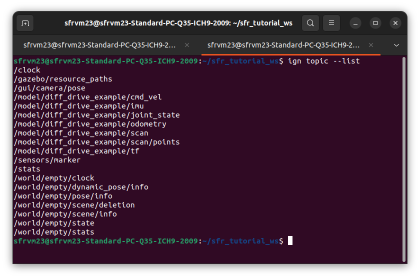
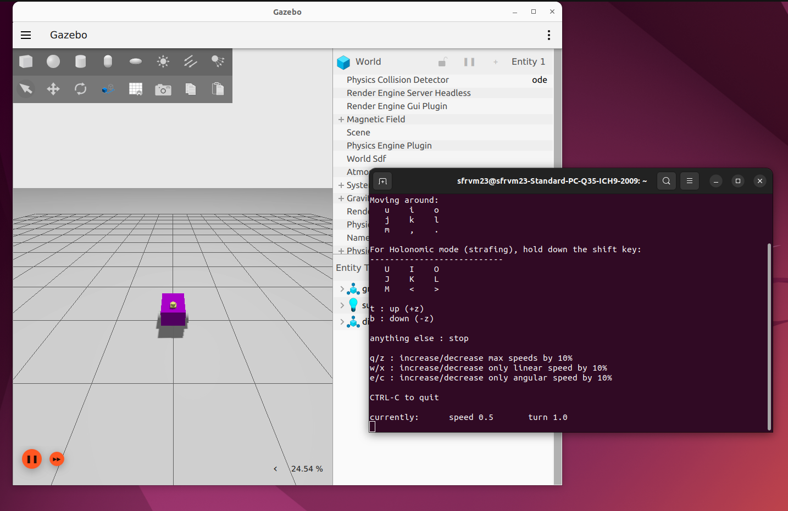
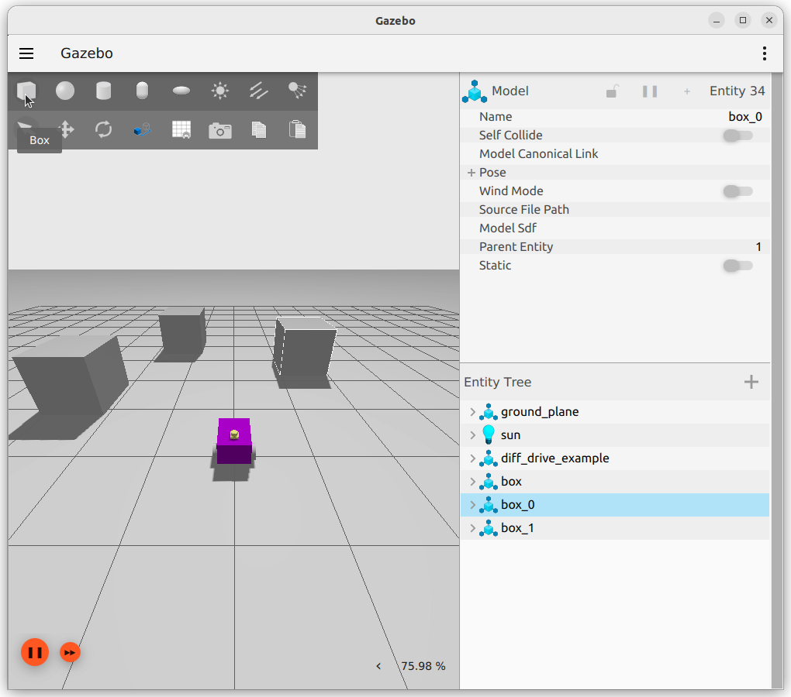
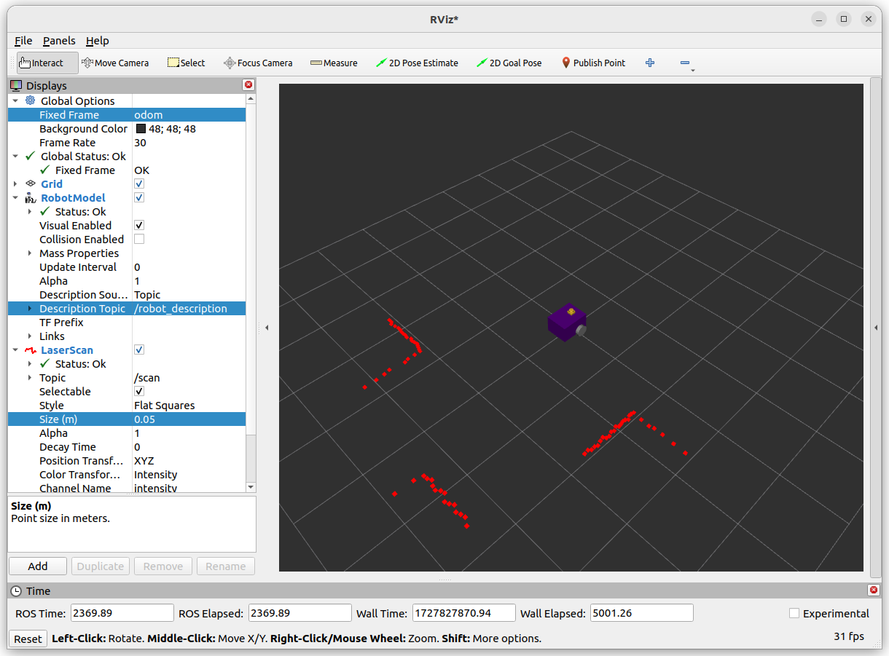

Linking Gazebo and ROS2
This portion of the tutorial will guide you through how to connect the simulation to ROS. This is the same for any simulation engine you might want to use (Unreal, Unity, IsaacSim)
Introspection of the Gazebo Simulation
Open a terminal with Ctrl+Alt+T and start a simulation containing the robot described by the xacro files covered so far:
cd ~/<YOUR_ROS_WORKSPACE>
colcon build --packages-select example_urdf_robot
ros2 launch example_urdf_robot sim_robot.launch.py
There will be two windows which open, Gazebo and RVIZ. We will focus on Gazebo for the moment and return to RVIZ later. The simulation should look similar to the image below.
{kind=link}
Checking Gazebo Topics
With the simulation successfully running, start a fresh terminal with Ctrl+Alt+T (alternatively the shortcut Ctrl+Shift+T to make a new tab, or use terminator), then run:
ign topic --list
The result should look similar to the picture below.
{kind=link}
From the differential drive controller, the /model/diff_drive_example/odometry and /model/diff_drive_example/cmd_vel topics are present. The joint state publisher is providing the /model/diff_drive_example/joint_state topic and it’s information. The /model/diff_drive_example/scan and /model/diff_drive_example/imu topics are provided by the lidar and imu sensor respectively.
A quick echo in the terminal can show that data is being produced by the simulation. For example, try the command:
ign topic --echo --topic /model/diff_drive_example/odometry
The terminal should then respond with the pose and twist of the robot between the odom and base_footprint frames (the robot has not moved anywhere and is stationary, these should be approximately 0). Press Ctrl+C to stop this output.
It is also possible to publish topics directly. Try moving the robot with a terminal command:
ign topic --pub "linear {x:0.5}" --topic /model/diff_drive_example/cmd_vel --msgtype ignition.msgs.Twist
Did it work? if(works){celebrate()}else{double_check_everything()}
Warning
Don’t forget to stop the robot!
ign topic --pub "linear {x:0.0}" --topic /model/diff_drive_example/cmd_vel --msgtype ignition.msgs.Twist
Bridge Between Gazebo and ROS2
Right now, using the terminal to send commands to the robot is pretty rubbish, we want to leverage the power of the Robot Operating Sytem!
To enable this, we need to “bridge” between gazebo and ROS. This is acheived via the ros_gz_bridge package.
The sim_robot.launch.py file shows how this is done.
72 # Bridge
73 # https://github.com/gazebosim/ros_gz/tree/humble/ros_gz_bridge
74 node_ros_gz_bridge = Node(
75 package='ros_gz_bridge',
76 executable='parameter_bridge',
77 arguments= [
78 '/clock' + '@rosgraph_msgs/msg/Clock' + '[' + 'ignition.msgs.Clock',
79 '/model/diff_drive_example/cmd_vel' + '@geometry_msgs/msg/Twist' + '@' + 'ignition.msgs.Twist',
80 '/model/diff_drive_example/odometry' + '@nav_msgs/msg/Odometry' + '[' + 'ignition.msgs.Odometry',
81 '/model/diff_drive_example/scan' + '@sensor_msgs/msg/LaserScan' + '[' + 'ignition.msgs.LaserScan',
82 '/model/diff_drive_example/tf' + '@tf2_msgs/msg/TFMessage' + '[' + 'ignition.msgs.Pose_V',
83 '/model/diff_drive_example/imu' + '@sensor_msgs/msg/Imu' + '[' + 'ignition.msgs.IMU',
84 '/model/diff_drive_example/joint_state' + '@sensor_msgs/msg/JointState' + '[' + 'ignition.msgs.Model',
85 ],
86 parameters= [{'qos_overrides./diff_drive_example.subscriber.reliability': 'reliable'}],
87 remappings= [
88 ('/model/diff_drive_example/cmd_vel', '/cmd_vel'),
89 ('/model/diff_drive_example/odometry', '/odom' ),
90 ('/model/diff_drive_example/scan', '/scan' ),
91 ('/model/diff_drive_example/tf', '/tf' ),
92 ('/model/diff_drive_example/imu', '/imu_raw'),
93 ('/model/diff_drive_example/joint_state', 'joint_states')
94 ],
95 output='screen'
96 )
The bridge can provide one-way (unidirectional) or two-way (bidirectional) sharing of topics between ROS and Gazebo. The arguments are written as follows:
The list of mapping from ROS msg to ignition msg can be found here. Note that going forward, ignition.msg.Type will become gz.msg.Type for future Gazebo versions - this is likely what you might see in any very up-to-date tutorials.
The direction is declared with [ ROS<-GZ (Gazbeo “publishes” into ROS), [ ROS->GZ (ROS “publishes” into Gazebo), and @ ROS<->GZ (both can publish into each other). Using a unidirectional approach saves on bandwidth.
The line '/model/gz_example_robot/odometry' + '@nav_msgs/msg/Odometry' + '[' + 'ignition.msgs.Odometry', therefore translates to a single combined string '/model/gz_example_robot/odometry@nav_msgs/msg/Odometry[ignition.msgs.Odometry', where odometry from gazebo is pushed into a ROS topic, but not the other way around.
The “remappings” decide what the topics names will be in ROS (e.g. just /cmd_vel).
Using ROS Functionality
As a trivial example, let’s use ROS to publish twist commands to the simulation, mimicking the topics and input for a real robot.
In an available terminal (start a fresh terminal with Ctrl+Alt+T if necessary), run the teleop_twist_keyboard node from the teleop_twist_keyboard package using:
ros2 run teleop_twist_keyboard teleop_twist_keyboard
Please note, you will need this terminal to be the active window to accept keyboard inputs.
{kind=link}
As the robot is non-holnomic, do not press the shift key. By pressing u the robot will move forward in a positive yaw arc, and should return to roughly where it started. Play around with the controls to convince yourself there is a connection between ROS topics and the simulation.
Utilising Other ROS2 Tools - RVIZ
Add some shapes to the simulation, to give the lidar various surfaces to measure in the scene. This can be achieved by using the box or cylinder buttons at the top left of the Gazebo window (see the image below). Press the button (e.g. box) and then move your cursor around to place the shape on the ground plane.
{kind=link}
Open RVIZ and make changes to the following settings in the left hand “Displays” panel:
Change Global Options -> Fixed Frame to odom
Add -> By Display Type -> RobotModel
Change Robot Model -> Description Topic to /robot_description in drop-down menu
Add -> By Topic -> /scan
Change Laser Scan -> Size (m) to 0.05
It should now be possible to view the readings from the lidar, along side a representation of the physical robot similar to the image below:
{kind=link}
Though we are using RVIZ to demonstrate how ROS packages can be leveraged, now the Gazebo simulation is talking to ROS any package available to us can be utilised.